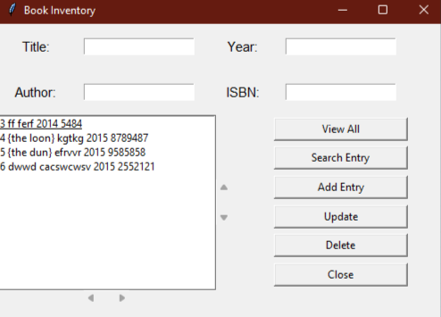
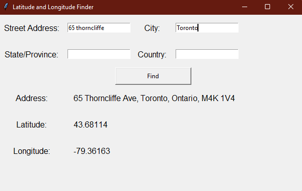

| Home | About | Skills | Projects | Education | Experience |
Employee Management SystemPython (Flask), SQL (SQLite), HTML, CSSA Flask web application that tracks employee records. Includes features for adding, deleting and viewing records. View More |
|
Book InventoryPython (Tkinter), SQL (SQLite)An application that stores data about books using an SQLite database. Provide options such as adding, deleting, viewing, or updating entries. View More |
 |
Latitude and Longitude FinderPython(GeoPy, Tkinter)A Python program that prompts the user to enter the street, city, state, and country, then outputs the latitude and longitude of that address. Uses Python’s GeoPy (Geocoding) library to pin-point the exact address and extract the latitude and longitude. View More |
 |